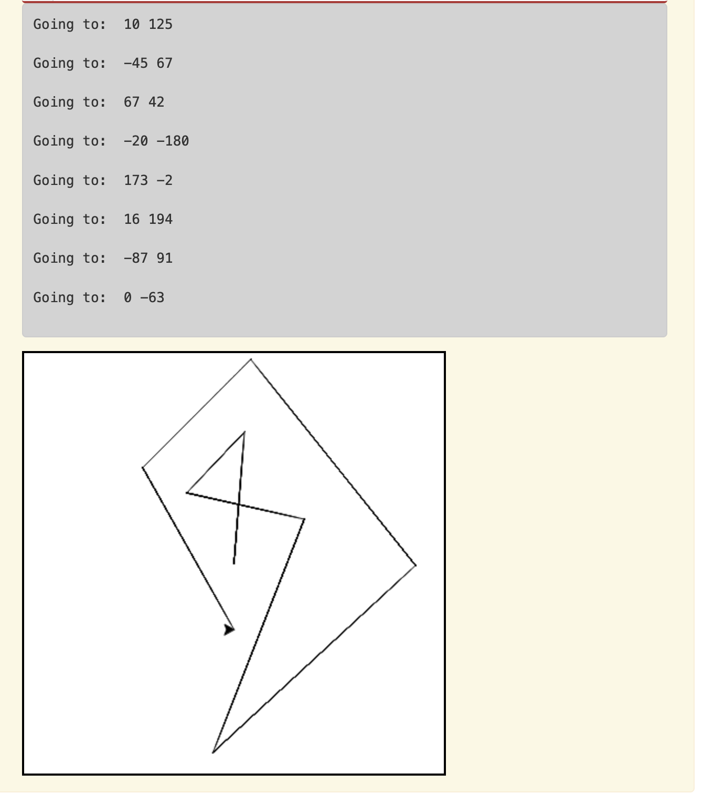

Week 5 Lab¶
Material Covered
Basic functions, listener functions and reading in files (Chapter 5)
Level 1¶
The following function is missing a docstring with pre and post conditions. The objective of this level is to add the missing docstring.
Add the missing docstring. You are to find out what is needed for the function to run (aka pre-conditions) and what the output will be/how the program will be altered by running the function (aka post-conditions). You do not need to add or delete any code in this level, only add the docstring.
Tip
There are 3 pre-conditions and 2 post conditions
Level 2¶
In this level you will create a turtle function that will draw a random line in the window when a key is pressed.
The starter code below imports modules and creates a window and a turtle.
Create a function called
goto_random(). Inside this function, create two variables to store random x and y coordinates. Assign these variables random values that range from -200 to 200 (these are left/bottom and right/top window edges). Use the randrange() function to get random numbers.Add a goto() statement that will send the turtle kyra to a random spot in the window, using the variables from the previous step.
Create another function called
reset(). This function should return the turtle to the center of the window and clear all the pen lines that the turtle has drawn.At the bottom of the program, call the reset function. This ensures the turtle window pops up, since a turtle command is called.
Under the reset function call, register the two functions so that they respond to the correct user key presses. The reset() function should be called when the r key is pressed and the goto_random() function should be called when the f key is pressed.
Finally, add the wn.listen() command at the end. This must be the last line.
Test to make sure this works. Click in the window, then hit the ‘f’ key a few times to make sure the turtle moves around. Then hit the ‘r’ key to ensure the turtle returns to the center and all the lines disappear.
Tip
Reference the textbook, Section 5.5 on listener functions if you have difficulty with the syntax for setting up the key press listeners.
Below is a clip of how your program should work.
Level 3¶
This level is similar to Level 2, except instead of getting random coordinates in response to key presses, you will read a file containing turtle coordinates and then send a turtle around the window using those specific coordinates.
Tip
Take a look at how the file is formatted before you start to code. The coordinate file is shown at the bottom of this page.
The provided code sets up a world and a turtle, and opens the file with the coordinates for reading. Run the code to make sure it works. Nothing happens yet.
Iterate through each line of the file. See Section 5.9 in the textbook for how to write a for loop that does this, in particular, look at activity 5.9.3 as an example. For each line, do the following:
Split up the coordinates (assign them to a variable called coords)
Access the two elements of coords (using coords[0] and coords[1]), using them in a goto() function to send the turtle to those coordinates
Print out the following message to the console: “Going to: <xcoordinate> <ycoordinate>”.
Once you have written this code, run it to make sure that the turtle does a walk through the coordinates and the coordinates print out to the console.
Your output should look like this:
{kind=link}